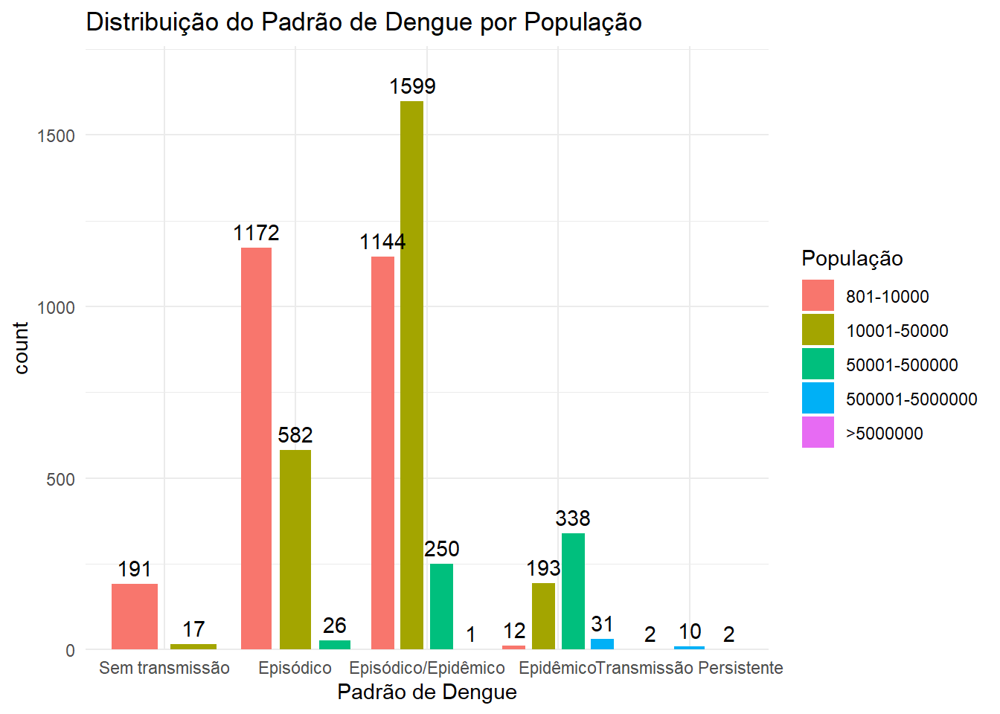
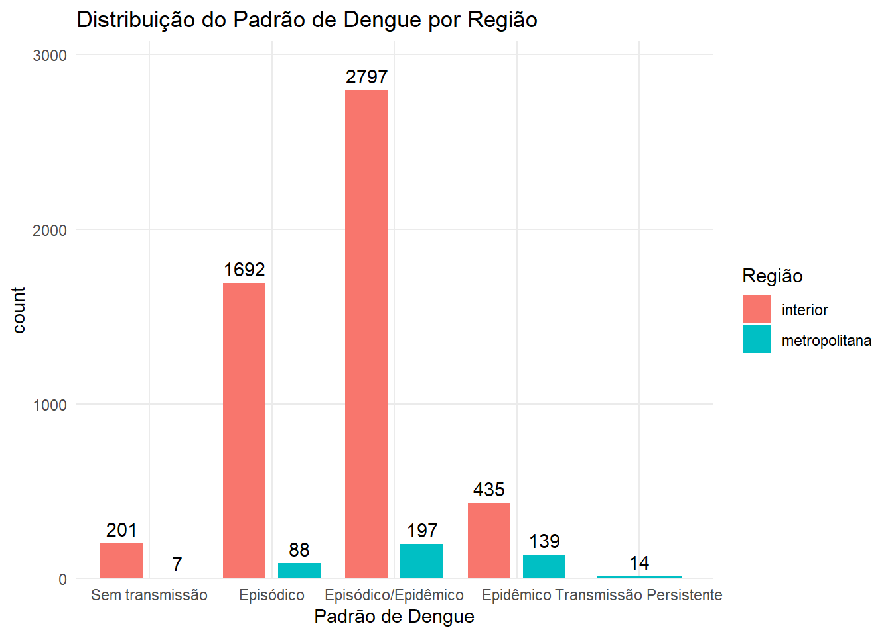
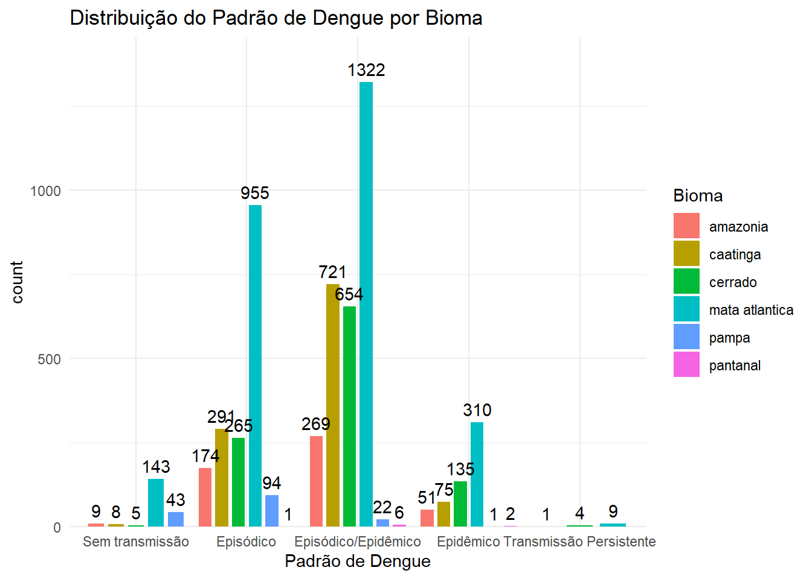
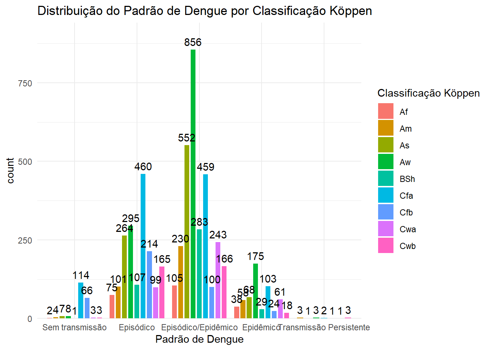

ℹ Using "','" as decimal and "'.'" as grouping mark. Use `read_delim()` for more control.
Rows: 5570 Columns: 16
── Column specification ────────────────────────────────────────────────────────
Delimiter: ";"
chr (4): uf_acr, uf_name, muni_name, dengue_pattern
dbl (12): region, uf_code, muni_code, xp, tp, dc3, dcmax, dci, ds3, dsmax, s...
ℹ Use `spec()` to retrieve the full column specification for this data.
ℹ Specify the column types or set `show_col_types = FALSE` to quiet this message.
ℹ Using "','" as decimal and "'.'" as grouping mark. Use `read_delim()` for more control.
Rows: 5570 Columns: 16── Column specification ────────────────────────────────────────────────────────
Delimiter: ";"
chr (4): uf_acr, uf_name, muni_name, dengue_pattern
dbl (12): region, uf_code, muni_code, xp, tp, dc3, dcmax, dci, ds3, dsmax, s...
ℹ Use `spec()` to retrieve the full column specification for this data.
ℹ Specify the column types or set `show_col_types = FALSE` to quiet this message.
det <-read_csv2("Determinantes/banco_determinantes.csv")
ℹ Using "','" as decimal and "'.'" as grouping mark. Use `read_delim()` for more control.
Rows: 5570 Columns: 9── Column specification ────────────────────────────────────────────────────────
Delimiter: ";"
chr (5): muni_name, uf_acr, tipo_regiao, bioma, koppen
dbl (4): muni_code, uf_code, altitude, pop22
ℹ Use `spec()` to retrieve the full column specification for this data.
ℹ Specify the column types or set `show_col_types = FALSE` to quiet this message.
d1 <-left_join(d_10_19, det, by ="muni_code" )d2 <-left_join(d_20_22, det,, by ="muni_code" )# NA#na_columns <- names(d1)[colSums(is.na(d1)) > 0]#print(na_columns)
Análise estatística 2010-2019
# Transformar variáveis em fatoresfactor_vars <-c("dengue_pattern", "tipo_regiao", "bioma", "koppen")# Aplicar transformação para todas as variáveis em fator de uma vezd1[factor_vars] <-lapply(d1[factor_vars], as.factor)# Definir intervalos numéricos para a variável 'pop22' d1$pop22 <-cut(d1$pop22, breaks =c(800, 10000, 50000, 500000, 5000000, Inf), labels =c("801-10000", "10001-50000", "50001-500000", "500001-5000000", ">5000000"),include.lowest =TRUE)# Verificar se a transformação foi aplicada corretamente#str(d1)
# Reordenar os níveis de dengue_pattern na ordem desejadad1$dengue_pattern <-factor(d1$dengue_pattern, levels =c("Sem transmissão", "Episódico", "Episódico/Epidêmico", "Epidêmico", "Transmissão Persistente"))# Plot 1: Gráfico de barras com destaque para transmissão persistenteggplot(d1, aes(x = dengue_pattern, fill = pop22)) +geom_bar(position =position_dodge(width =0.9), width =0.7) +# Aumenta o espaçamento entre as barrasscale_y_continuous(expand =expansion(mult =c(0, 0.1))) +# Adiciona espaço no topogeom_text(stat='count', aes(label=..count..), vjust=-0.5, position =position_dodge(0.9)) +# Adiciona labels nas barraslabs(title ="Distribuição do Padrão de Dengue por População", x ="Padrão de Dengue", fill ="População") +theme_minimal()
Warning: The dot-dot notation (`..count..`) was deprecated in ggplot2 3.4.0.
ℹ Please use `after_stat(count)` instead.

# Plot 2: Gráfico de barras com destaque para tipo_regiaoggplot(d1, aes(x = dengue_pattern, fill = tipo_regiao)) +geom_bar(position =position_dodge(width =0.9), width =0.7) +scale_y_continuous(expand =expansion(mult =c(0, 0.1))) +geom_text(stat='count', aes(label=..count..), vjust=-0.5, position =position_dodge(0.9)) +labs(title ="Distribuição do Padrão de Dengue por Região", x ="Padrão de Dengue", fill ="Região") +theme_minimal()

# Plot 3: Gráfico de barras com destaque para biomaggplot(d1, aes(x = dengue_pattern, fill = bioma)) +geom_bar(position =position_dodge(width =0.9), width =0.7) +scale_y_continuous(expand =expansion(mult =c(0, 0.1))) +geom_text(stat='count', aes(label=..count..), vjust=-0.5, position =position_dodge(0.9)) +labs(title ="Distribuição do Padrão de Dengue por Bioma", x ="Padrão de Dengue", fill ="Bioma") +theme_minimal()

# Plot 4: Gráfico de barras com destaque para classificação Koppenggplot(d1, aes(x = dengue_pattern, fill = koppen)) +geom_bar(position =position_dodge(width =0.9), width =0.7) +scale_y_continuous(expand =expansion(mult =c(0, 0.1))) +geom_text(stat='count', aes(label=..count..), vjust=-0.5, position =position_dodge(0.9)) +labs(title ="Distribuição do Padrão de Dengue por Classificação Köppen", x ="Padrão de Dengue", fill ="Classificação Köppen") +theme_minimal()

Estatistica
# Estatísticas descritivas e contagem para todas as variáveis, agrupadas por dengue_pattern# Tabelas de contingência para as variáveis categóricastabela_pop22 <-table(d1$dengue_pattern, d1$pop22)tabela_tipo_regiao <-table(d1$dengue_pattern, d1$tipo_regiao)tabela_bioma <-table(d1$dengue_pattern, d1$bioma)tabela_koppen <-table(d1$dengue_pattern, d1$koppen)# Teste de Qui-Quadrado para cada variável categóricateste_pop22 <-chisq.test(tabela_pop22)
Warning in chisq.test(tabela_pop22): Aproximação do qui-quadrado pode estar
incorreta
Warning in chisq.test(tabela_tipo_regiao): Aproximação do qui-quadrado pode
estar incorreta
teste_bioma <-chisq.test(tabela_bioma)
Warning in chisq.test(tabela_bioma): Aproximação do qui-quadrado pode estar
incorreta
teste_koppen <-chisq.test(tabela_koppen)
Warning in chisq.test(tabela_koppen): Aproximação do qui-quadrado pode estar
incorreta
# Criar uma tabela final que combina contagens e estatísticas para todas as variáveistabela_final <-data.frame(Variavel =c(rep("População", length(tabela_pop22)),rep("Região", length(tabela_tipo_regiao)),rep("Bioma", length(tabela_bioma)),rep("Köppen", length(tabela_koppen))),Categoria =c(rep(levels(d1$pop22), times=nlevels(d1$dengue_pattern)),rep(levels(d1$tipo_regiao), times=nlevels(d1$dengue_pattern)),rep(levels(d1$bioma), times=nlevels(d1$dengue_pattern)),rep(levels(d1$koppen), times=nlevels(d1$dengue_pattern))),Dengue_Pattern =rep(levels(d1$dengue_pattern), each=length(levels(d1$pop22)) +length(levels(d1$tipo_regiao)) +length(levels(d1$bioma)) +length(levels(d1$koppen))),Contagem =c(as.numeric(t(tabela_pop22)),as.numeric(t(tabela_tipo_regiao)),as.numeric(t(tabela_bioma)),as.numeric(t(tabela_koppen))),P_Valor =c(rep(teste_pop22$p.value, length(tabela_pop22)),rep(teste_tipo_regiao$p.value, length(tabela_tipo_regiao)),rep(teste_bioma$p.value, length(tabela_bioma)),rep(teste_koppen$p.value, length(tabela_koppen))))# Exibir a tabela finalprint("Tabela Final com Contagens e Testes Estatísticos")
[1] "Tabela Final com Contagens e Testes Estatísticos"
print(tabela_final)
Variavel Categoria Dengue_Pattern Contagem P_Valor
1 População 801-10000 Sem transmissão 191 0.000000e+00
2 População 10001-50000 Sem transmissão 17 0.000000e+00
3 População 50001-500000 Sem transmissão 0 0.000000e+00
4 População 500001-5000000 Sem transmissão 0 0.000000e+00
5 População >5000000 Sem transmissão 0 0.000000e+00
6 População 801-10000 Sem transmissão 1172 0.000000e+00
7 População 10001-50000 Sem transmissão 582 0.000000e+00
8 População 50001-500000 Sem transmissão 26 0.000000e+00
9 População 500001-5000000 Sem transmissão 0 0.000000e+00
10 População >5000000 Sem transmissão 0 0.000000e+00
11 População 801-10000 Sem transmissão 1144 0.000000e+00
12 População 10001-50000 Sem transmissão 1599 0.000000e+00
13 População 50001-500000 Sem transmissão 250 0.000000e+00
14 População 500001-5000000 Sem transmissão 1 0.000000e+00
15 População >5000000 Sem transmissão 0 0.000000e+00
16 População 801-10000 Sem transmissão 12 0.000000e+00
17 População 10001-50000 Sem transmissão 193 0.000000e+00
18 População 50001-500000 Sem transmissão 338 0.000000e+00
19 População 500001-5000000 Sem transmissão 31 0.000000e+00
20 População >5000000 Sem transmissão 0 0.000000e+00
21 População 801-10000 Sem transmissão 0 0.000000e+00
22 População 10001-50000 Sem transmissão 0 0.000000e+00
23 População 50001-500000 Episódico 2 0.000000e+00
24 População 500001-5000000 Episódico 10 0.000000e+00
25 População >5000000 Episódico 2 0.000000e+00
26 Região interior Episódico 201 5.025743e-86
27 Região metropolitana Episódico 7 5.025743e-86
28 Região interior Episódico 1692 5.025743e-86
29 Região metropolitana Episódico 88 5.025743e-86
30 Região interior Episódico 2797 5.025743e-86
31 Região metropolitana Episódico 197 5.025743e-86
32 Região interior Episódico 435 5.025743e-86
33 Região metropolitana Episódico 139 5.025743e-86
34 Região interior Episódico 0 5.025743e-86
35 Região metropolitana Episódico 14 5.025743e-86
36 Bioma amazonia Episódico 9 1.091618e-98
37 Bioma caatinga Episódico 8 1.091618e-98
38 Bioma cerrado Episódico 5 1.091618e-98
39 Bioma mata atlantica Episódico 143 1.091618e-98
40 Bioma pampa Episódico 43 1.091618e-98
41 Bioma pantanal Episódico 0 1.091618e-98
42 Bioma amazonia Episódico 174 1.091618e-98
43 Bioma caatinga Episódico 291 1.091618e-98
44 Bioma cerrado Episódico 265 1.091618e-98
45 Bioma mata atlantica Episódico/Epidêmico 955 1.091618e-98
46 Bioma pampa Episódico/Epidêmico 94 1.091618e-98
47 Bioma pantanal Episódico/Epidêmico 1 1.091618e-98
48 Bioma amazonia Episódico/Epidêmico 269 1.091618e-98
49 Bioma caatinga Episódico/Epidêmico 721 1.091618e-98
50 Bioma cerrado Episódico/Epidêmico 654 1.091618e-98
51 Bioma mata atlantica Episódico/Epidêmico 1322 1.091618e-98
52 Bioma pampa Episódico/Epidêmico 22 1.091618e-98
53 Bioma pantanal Episódico/Epidêmico 6 1.091618e-98
54 Bioma amazonia Episódico/Epidêmico 51 1.091618e-98
55 Bioma caatinga Episódico/Epidêmico 75 1.091618e-98
56 Bioma cerrado Episódico/Epidêmico 135 1.091618e-98
57 Bioma mata atlantica Episódico/Epidêmico 310 1.091618e-98
58 Bioma pampa Episódico/Epidêmico 1 1.091618e-98
59 Bioma pantanal Episódico/Epidêmico 2 1.091618e-98
60 Bioma amazonia Episódico/Epidêmico 0 1.091618e-98
61 Bioma caatinga Episódico/Epidêmico 1 1.091618e-98
62 Bioma cerrado Episódico/Epidêmico 4 1.091618e-98
63 Bioma mata atlantica Episódico/Epidêmico 9 1.091618e-98
64 Bioma pampa Episódico/Epidêmico 0 1.091618e-98
65 Bioma pantanal Episódico/Epidêmico 0 1.091618e-98
66 Köppen Af Episódico/Epidêmico 2 9.003411e-147
67 Köppen Am Epidêmico 4 9.003411e-147
68 Köppen As Epidêmico 7 9.003411e-147
69 Köppen Aw Epidêmico 8 9.003411e-147
70 Köppen BSh Epidêmico 1 9.003411e-147
71 Köppen Cfa Epidêmico 114 9.003411e-147
72 Köppen Cfb Epidêmico 66 9.003411e-147
73 Köppen Cwa Epidêmico 3 9.003411e-147
74 Köppen Cwb Epidêmico 3 9.003411e-147
75 Köppen Af Epidêmico 75 9.003411e-147
76 Köppen Am Epidêmico 101 9.003411e-147
77 Köppen As Epidêmico 264 9.003411e-147
78 Köppen Aw Epidêmico 295 9.003411e-147
79 Köppen BSh Epidêmico 107 9.003411e-147
80 Köppen Cfa Epidêmico 460 9.003411e-147
81 Köppen Cfb Epidêmico 214 9.003411e-147
82 Köppen Cwa Epidêmico 99 9.003411e-147
83 Köppen Cwb Epidêmico 165 9.003411e-147
84 Köppen Af Epidêmico 105 9.003411e-147
85 Köppen Am Epidêmico 230 9.003411e-147
86 Köppen As Epidêmico 552 9.003411e-147
87 Köppen Aw Epidêmico 856 9.003411e-147
88 Köppen BSh Epidêmico 283 9.003411e-147
89 Köppen Cfa Transmissão Persistente 459 9.003411e-147
90 Köppen Cfb Transmissão Persistente 100 9.003411e-147
91 Köppen Cwa Transmissão Persistente 243 9.003411e-147
92 Köppen Cwb Transmissão Persistente 166 9.003411e-147
93 Köppen Af Transmissão Persistente 38 9.003411e-147
94 Köppen Am Transmissão Persistente 58 9.003411e-147
95 Köppen As Transmissão Persistente 68 9.003411e-147
96 Köppen Aw Transmissão Persistente 175 9.003411e-147
97 Köppen BSh Transmissão Persistente 29 9.003411e-147
98 Köppen Cfa Transmissão Persistente 103 9.003411e-147
99 Köppen Cfb Transmissão Persistente 24 9.003411e-147
100 Köppen Cwa Transmissão Persistente 61 9.003411e-147
101 Köppen Cwb Transmissão Persistente 18 9.003411e-147
102 Köppen Af Transmissão Persistente 0 9.003411e-147
103 Köppen Am Transmissão Persistente 3 9.003411e-147
104 Köppen As Transmissão Persistente 1 9.003411e-147
105 Köppen Aw Transmissão Persistente 3 9.003411e-147
106 Köppen BSh Transmissão Persistente 0 9.003411e-147
107 Köppen Cfa Transmissão Persistente 2 9.003411e-147
108 Köppen Cfb Transmissão Persistente 1 9.003411e-147
109 Köppen Cwa Transmissão Persistente 1 9.003411e-147
110 Köppen Cwb Transmissão Persistente 3 9.003411e-147
Ajustar o modelo de Regressão Logística Multinomial
# Usando 'dengue_pattern' como variável dependente e 'tipo_regiao', 'bioma' e 'koppen' como independentesmodelo_multinom <-multinom(dengue_pattern ~ tipo_regiao + bioma + koppen + pop22, data = d1)
# weights: 100 (76 variable)
initial value 8964.569172
iter 10 value 5634.775683
iter 20 value 5020.034837
iter 30 value 4569.458043
iter 40 value 4399.732720
iter 50 value 4349.545357
iter 60 value 4337.109793
iter 70 value 4327.362941
iter 80 value 4326.693292
iter 90 value 4326.583875
iter 100 value 4326.553190
final value 4326.553190
stopped after 100 iterations